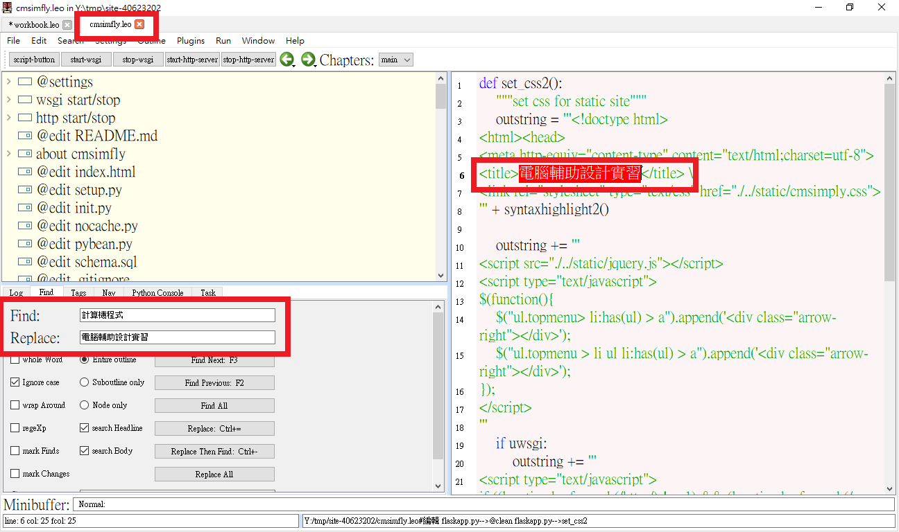

升級CMSimfly倉儲中的flaskapp.py後,網頁Title(如圖8-1)也必須更改。
(圖8-1)
Step:
用Leo開啟檔案 cmsimfly.leo，使用搜尋功能找到"計算機程式"，將它改為"電腦輔助設計實習"，儲存檔案後即可提交到遠端。
(圖8-2)
心得:
下週就是第九週了，要打自評成績，或許做得不是最好，但至少每周都要跟上進度並且每週更新內容，現在已經可以找出自己的錯誤且可以解決大部分的問題，對於更新網誌、倉儲及投影片也越來越上手。